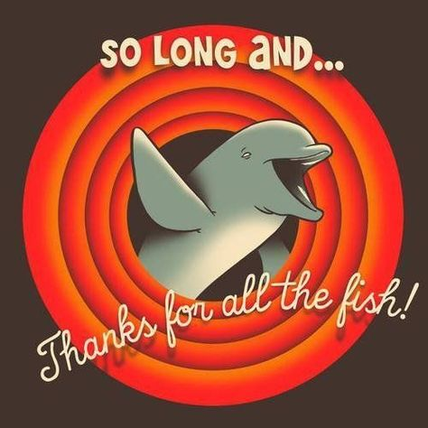

4 Offboarding

Everybody will at some point leave MML. Having a clear offboarding process ensures there are no loose ends when someone leaves the lab, that others who might carry on work being done can do so most easily, and provides an opportunity to clarify any remaining steps (e.g. publication, data archiving, future collaborations).
4.1 Offboarding Checklist
Refer to this checklist for separation protocols in areas such as scientific samples, chemicals, project planning database, field gear, manuscripts, paper/electronic reports, and google accounts.
4.2 Email Access
IT email guidance, in compliance with federal regulations, is to disable email accounts within one business day after clearance (departure/retirement). Once the email account is disabled, it no longer works and anyone who sends a message to it will get a failure notice saying the email account doesn’t exist.
Exceptions have been made to extend this deadline if necessary, work with your Program Lead or Lab Director and IT. Thirty days after a Google account is closed, all items (docs, emails, and events) are deleted forever. If an extension is needed beyond the 30 days, contact AFSC.servicedesk@noaa.gov. You may also request to transfer ownership of Google drive folders.
If you wish to let people know you’re leaving, set up an auto-responder message 30 days before your departure date with information such as a new email address. You can also put information in your signature block.
4.3 Enterprise Services Portal
Access to the ES Portal is deprovisioned during your Offboarding process, on or before your separation date.
4.4 Electronic Personnel Folder (eOPF)
If you are transferring to another Federal agency that uses eOPF, your eOPF will automatically transfer with you to that agency. For all other employees separating from the Department of Commerce, access to your eOPF is deprovisioned on or before your separation date.
Before you separate, it is recommended that you make copies of your eOPF documents prior to your separation date and if you are retiring, arrange with your retirement specialist to send copies of any documents filed in your eOPF after your separation to your current mailing address.
4.5 Employee Personal Page (EPP)
You will still be able to access your EPP after you leave the Department of Commerce and/or the Federal government for 90 days after separation. Prior to separating, make sure to add or update your personal email address to your EPP which will be used to send you notifications for forgotten user IDs, temporary passwords, and other notices.
You can change your email addresses in myEPP by selecting ‘Preferences’ from the EPP main menu and then selecting ‘Change E-mail Addresses.’
4.6 WebTA
Access to your webTA profile will be deprovisioned after your webTA timekeeper marks your last timesheet as ‘final’, typically within 14 days or one pay period of your separation date.
4.7 Turning in Equipment
Ensure any lab equipment (e.g. computer and peripherals) you have been using has been returned to the lab, office furniture is present and accounted for, and that tagged equipment has been logged in with the MML Property Manager. Make sure any problems with equipment are documented and that the MML Property Manager and Program Lead have been made aware of them.
4.8 MML Library
Return all books and reprints checked out from the MML library.
4.9 Key Card and Office Keys
Key card access to WRC facilities will be terminated [find out if this is the last day onsite]. Office keys should be returned to MML Admin staff.
4.10 Retirement Info
The first step is to check with a Retirement Counseling Specialist as soon as possible. Sylvia.Hogan@noaa.gov is dedicated exclusively to providing services to Fisheries employees. In addition to benefits counseling, Sylvia will be responsible for providing detailed, individual retirement estimates and counseling and will work hand-in-hand with you to navigate through the retirement application process and to assist with questions and inquiries.
Please complete a Request for Information form and return to OHCS.Retirements@noaa.gov to start the process.
Once you have a date selected and Retirement Specialist assigned, please make sure to submit your completed retirement package 6 to 8 weeks before your planned retirement date.
In addition to the process above, please contact the MML Admin once you have decided on a date. They will initiate your SF52, CD-126, CD-527, and your CD-529.
Other helpful links: Are You Ready to Retire Factsheet and Your Plan for Retirement Decision Points